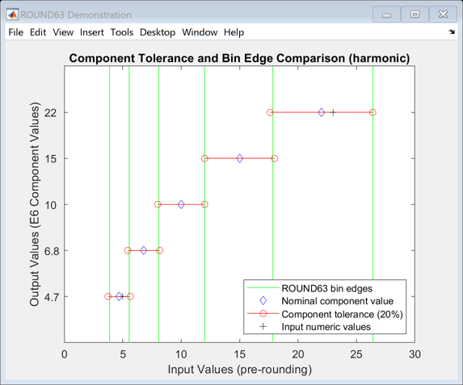

ROUND63 Examples
The function ROUND63 rounds the input numeric values to values from the IEC 60063 "Preferred Numbers" series. By default ROUND63 simulates the tolerance range of electronic components, so that the rounding bin edges approximate the component tolerance limits.
Contents
Basic Usage
ROUND63's first input is a numeric array of values to be rounded, the second input selects the E-series (e.g. 'E24', 'E48', 'E96', etc.):
round63(500,'E6') round63(1:6,'E12')
ans =
470
ans =
1 2.2 3.3 3.9 4.7 5.6
Input 3: Select Rounding Method
The optional third input argument can be used to select the rounding method, and can be specified as one of 'harmonic', 'arithmetic', 'up', or 'down' (or their intitials, i.e. 'h', 'a', 'u', or 'd' respectively):
ipt = [5,42,18,100]; round63(ipt,'E6','harmonic') % default round63(ipt,'E6','arithmetic') round63(ipt,'E6','up') round63(ipt,'E6','down')
ans =
4.7 47 22 100
ans =
4.7 47 15 100
ans =
6.8 47 22 100
ans =
4.7 33 15 100
Output 4: Bin Edges
The fourth output is a vector of the bin edges used to allocate the values of X into bins (the section "Bin Edges and Component Tolerance" below explains these values in more detail):
[~,~,~,edg] = round63([1,101],'E3')
edg =
0.63946
1.375
2.9971
6.3946
13.75
29.971
63.946
137.5
Output 3: Preferred Number Series
ROUND63's third output is a vector of contiguous values from the selected E-series, and which includes all of the values in Y:
[Y,~,pns] = round63([1,101],'E3')
Y =
1 100
pns =
1
2.2
4.7
10
22
47
100
Output 2: Indices
The second output is an array of indices idx with the same size as X, such that the output Y = pns(idx):
[Y,idx,pns] = round63([1,101],'E3')
Z = pns(idx)
Y =
1 100
idx =
1 7
pns =
1
2.2
4.7
10
22
47
100
Z =
1
100
Component Tolerance and Bin Edges (Harmonic Mean)
The introduction mentions that ROUND63 simulates the component tolerance range: it does this by computing the harmonic mean of adjacent Preferred Number Series (pns) values. The harmonic mean values simulate the tolerance ranges of the component values: the means are shown as vertical green lines in the figure below. These means are the bin edges used to round the input values into the IEC 60063 values (shown as blue diamonds):
round63_view([5,23],'E6')
 Example: Parallel Resistor Values with NUM2CIRCUIT
As a form of entertainment and example for ROUND63 I wrote the function NUM2CIRCUIT (included with the ROUND63 zip file) that finds parallel/series electronic component values to match the input value/s. For example, to find four E12 resistors that could be used in parallel with an equivalent circuit resistance closest to 123 Ohms:
[eqv,val] = num2circuit(123, 'E12', [10,1000], 4, true)
eqv =
122.95
val =
820 560 390 390
Example: Numeric to Metric Prefix with NUM2SIP
An easy way to convert the numeric values to strings with metric/SI prefixes (e.g. 1000 -> '1 k') is to use my FEX submission NUM2SIP:
num2sip(round63(23e5,'E6'))
ans = 2.2 M